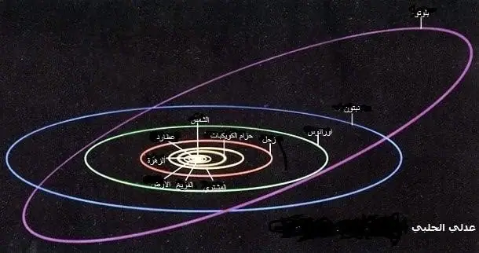
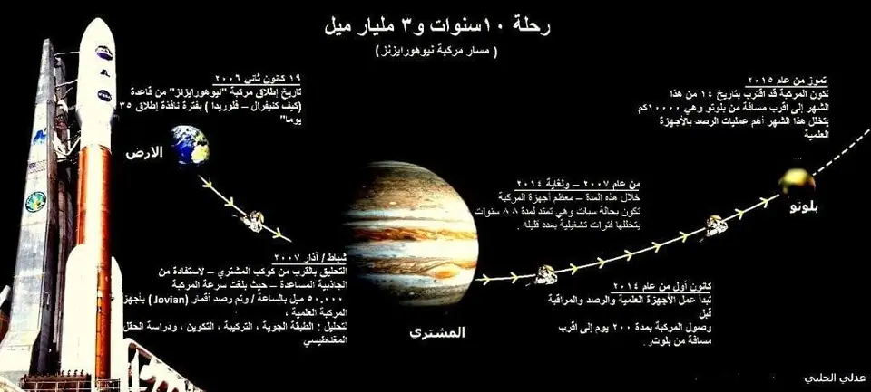
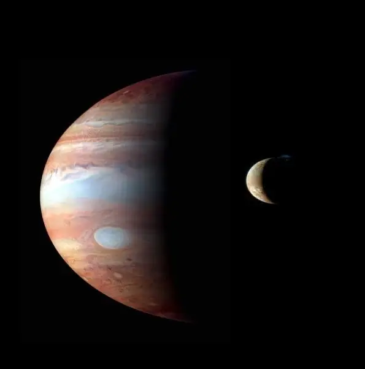
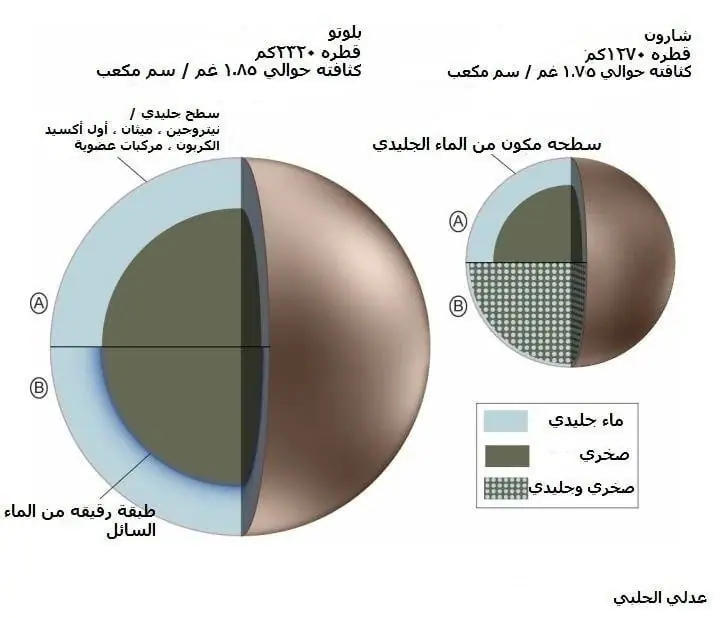
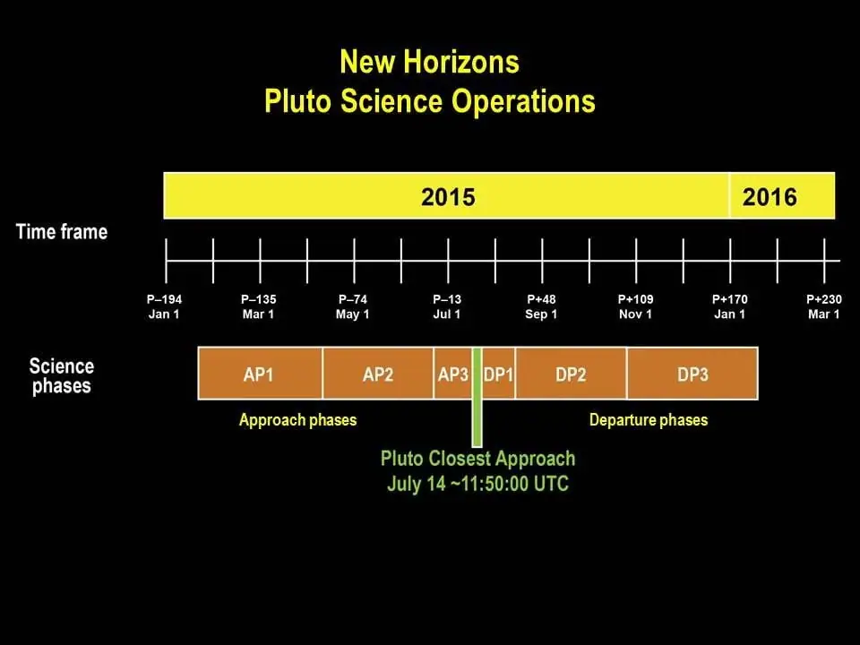

مقالات ·
المركبة الفضائية New Horizons” نيو هورايزنز ” إلى بلوتو (1)
من خلال المشروع الطموح لوكالة الفضاء الأمريكية ” ناسا” تم إطلاق المركبة الفضائية ” نيو هورايزنز ” New Horizons NH في مهمة غير مسبوقة لاكتشاف إحدى الأجرام الجليدية الواقعة في أقاصي مجموعتنا الشمسية إلا وهو الكوكب القزم بلوتو وأقماره، حيث يسبق أبدا” بأن قامت أي مركبة بقطع مسافة حوالي 4.76 مليار كم والتحليق بالقرب من كوكب قزم، من المخطط لهذه المركبة باستكمال رحلتها إلى أعماق بعض أجرام حزام كايبر Kuiper الموجودة على حافة نظامنا الشمسي وأن تزور جرم او جرمين تابعين لحزام كايبر، والآن يجري البحث عن أجرام تتناسب مع كمية الطاقة المخزنة بالمركبة، لتكون باستطاعتها الوصول لهذه العوالم الثلجية البعيدة لتتمكن المركبة التحليق بقربها لاستكمال مهمتها التي امتدت لعام، 2020 وبهذا تكون المركبة قد ابتعدت عن حدود مدار بلوتو بمسافة تقدر بأكثر من مليار ميل.
و تجدر الإشارة إلى ان الاتحاد الفلكي الدولي قام بإعادة تعريف الكواكب والذي اعتبر بلوتو كوكباً قزماً Dwarf Planet وأنه جزء من أجرام حزام (كايبر) ويأتي بالترتيب الثاني حجما” بعد الكوكب القزم “اريس” (Eris).
بلوتو جرم مختلف وشديد الاختلاف: قُطره أقل من نصف قُطر عطارد، ويستغرق وصول أشعة الشمس إليه 4 ساعات، مظلم أكثر من الأرض ألف مرة. وتبلغ درجة الحرارة على سطح بلوتو 219- إلى 233- درجة سِلِسْيُوس يتألف سطحه من مزيج من الصخور والمياه المتجمِّدة والميثان وغيرها من المركَّبات المتطايرة.
وقد تكون تلك المركَّبات قد بقيت دون تغيير جوهري منذ نشأة الكواكب. ويقول بينزِل أحد أعضاء الفريق العلمي لبعثة ” نيو هورايزنز ” إنَّ تلك المادة الأزلية معناها أن البعثة «ليست مجرَّد رحلة عبر المكان، وإنما رحلة عبر الزمان أيضًا”.
معلوماتنا عن بلوتو قليلة وغير اضحة نسبيا وذلك لعدم زيارته في السابق. العلماء لا يملكون اية صور واضحة المعالم مثل بقية كواكب المجموعة الشمسية ولذا فإن المعلومات المتوفرة عن الغلافه الجوي ومكونات سطحة الطبوغرافية والجيولوجية ومكوناته الكيميائية والغازية ضئيلة جدا”.
بلوتو بالأرقام
اكتشفه عالم الفلك الأمريكي كلايد تومبو عام 1930
متوسط بعده عن الشمس مليار كم 5.9
درجة حرارة السطح تقدر بحوالي 233-
الكتلة / كتلة الأرض 0.24
اليوم (يوم ارضي) 6.4
السنة (سنة ارضية) 248
القطر(كم) 2320
أقرب مسافة إلى الشمس/ حضيض: 29.657 وحدة فلكية.
أبعد مسافة عن الشمس / أوج: 48.871 وحدة فلكية.

أقمار بلوتو:
- شارون Charon : قطره 749 ميل تم اكتشافه عام 1987.
- 2- هايدرا Hydra P1 : قطره من 30 – 100 ميل تم اكتشافه عام 2005 .
- 3- نيكس P2Nix قطره من 25 – 80 ميل تم اكتشافه عام 2005.
- 4- كيربيروس Kerberos P4 : قطره من 6 – 16 ميل تم اكتشافه عام 2011.
- 5- ستيكس P5Styx : قطره من 6 – 15 ميل تم اكتشافه عام 2012 .
تم إطلاق المركبة الفضائية بتاريخ 19 كانون ثاني من عام 2006 الساعة 19:00 بالتوقيت العالمي من خلال صاروخ (أطلس V 551) بسرعة إطلاق بلغت km.s^-1 16.26 وتُعد أسرع مركبة فضائية تم إطلاقها في حينه. تمت عملية الإطلاق من قاعدة (كيب كانيفرال – فلويدا)، بلغت الكلفة الإجمالية لهذا المشروع 700 مليون دولار أمريكي، في رحلة تمتد لمدة عشر سنوات تقطع من خلالها المركبة مسافة تقدر بحوالي 4.76 مليار كم. من المخطط أن تقترب من بلوتو بتاريخ 14 تموز من هذا العام وعلى أن تستكمل رحلتها إلى أجرام حزام ” كايبر ” بالفترة الممتدة من عام 2016 – 2020 .
ان حزام (كايبر) الذي يقع على حافة النظام الشمسي يمتد بمسافة 30 وحدة فلكية من كوكب نبتون ويتكون من أجسام بدائية منذ تكون قرص النظام الشمسي – وتعتبر دراسة هذه الأجرام مفتاحاً لحل لغز بنية تكوين النظام الشمسي الأولية، تحديد خصائص تلك الأجرام أمر جوهري في فهم الصورة الأشمل لبنية المجموعة الشمسية.
ان هذه الأجسام لم تتعرض لدرجات حرارة الشمس العالية لذلك بقيت هذه الأجسام على حالتها الطبيعية محفوظة بدرجات حرارة منخفضة جدا مما جعلها عينات بدائية منذ تكوّن النظام الشمسي قبل 4.6 مليار سنة.
كتلتة هذه الأجرام تعادل عشرة أضعاف كتلة المذنبات بالحجم النموذجي، ولاشك من أن مصدر معظم المذنبَّات ذات الفترات القصيرة والمتوسطة هو حزام كايبر.
منذ عام 2011 اكتشفت بعض المراصد الأرضية عدداً من الأجرام المحتملة لمهمة N.H إلا أنه بسبب بعد مسافتها من الصعب الوصول إليها لعدم إمكانية وجود وقود يكفي لوصول المركبة لهذه الأجرام.
مسار مدار المركبة الفضائية ” نيوهورايزنز “
استغرقت المركبة عاماً فقط للوصول إلى كوكب المشتري بتاريخ 28 شباط عام 2007، حيث قطعت مسافة 500 مليون ميل في عام وأحد فقط – واقتربت من الكوكب بمسافة 1.4 مليون ميل للاستفادة من الجاذبية المساعدة لتتسارع المركبة لتصل إلى سرعة 4 كم / ثانية.

في عام 2007 عندما اقتربت المركبة من مدار المشتري، ومن خلال الكاميرا التلسكوبية بعيدة المدى (LORRI) فقد حصلت على صور رائعة لبركانTvashtar” تافيشتار ” الموجود على سطح القمر ” أيو ” حيث تم قياس ارتفاع عامود الغازات وأبخرة البركان وكانت قد بلغ ارتفاعها 330 كم.
فمدار بلوتو الطويل يحمله بعيدًا عن الشمس أكثر من بُعد الأرض عنها بحوالي 40 مرة؛ ولذلك يصبح أقل إثارة للاهتمام بعد عام 2020. ونظرًا لأن غلافه الجوي قد يتجمَّد كليًّا ويهبط إلى سطح الكوكب لعقود طويلة، فقد لا تسنح الفرصة من زيارته مرة أخرى قبل عام 2230.
ان المسافة التي سوف تقطعها المركبة من كوكب المشتري إلى بلوتو حوالي 2.95 مليار ميل وللوصول إليه حوالي 8 سنوات وثمانية أشهر.
الصورة لكوكب المشتري وأحد أقماره ” أيو” ، تم تصويرة من خلال مركبة ” نيوهورايزنز “

سبات المركبة الفضائية أثناء رحلتها الفضائية:
يتم العمل بهذا النظام (السبات) أي تطفأ معظم طاقة المركبة ما عدا كمبيوتر الرحلة، وذلك لتخفيض كلفة التشغيل والمحافظة على أجهزة المركبة الفضائية ولتفادي فشل بعض أنظمة المركبة خلال مدة رحلتها الطويلة، وأيضا” لاستغلال محطة الفضاء الأرضية بتشغيل هوائياتها ذات المدى البعيد لمهمات فضائية أخرى، حيث تم وضع الأجهزة بحالة hibernation Mode أي في حالة سبات تسمح بتشغيل طاقة منخفضة لتشغيل كمبيوتر الرحلة والساعة الاليكترونية فقط التي بدورها تقوم بإعادة تشغيل المركبة أوتوماتيكيا” في الوقت المحدد.، إي بمعنى إيقاظ أجهزة المركبة من سباتها في الوقت المطلوب على وضع Active Mode حيث يتم إرسال إشارة لاسلكية من المركبة إلى محطة الفضاء الأرضية على أنها قامت بتشغيل أجهزتها بكامل قوتها في الوقت المحدد والمبرمج مسبقا” .
مدة سبات المركبة أثناء رحلتها (توقيف بعض الأجهزة ):
- منذ تاريخ إطلاق المركبة عام 2006 من شهر كانون ثاني، تم وضع المركبة بحالة (سبات ) لعدة مرات بمدة إجمالية وصلت إلى 1873 يوما” أي حوالي ثلثي مدة الرحلة
- منذ منتصف عام 2007 ولنهاية عام 2014 تخلل هذه المدة 18 فاصل مابين تشغيل وتوقيف بعض الأجهزة، حيث تمثلت بأقصر مده وهي 36 يوما” إلى 202 يوم كأطول مدة.
- في كل عام يتم تشغيل بعض الأجهزة لمرتين او ثلاثة فقط للتأكد من بعض أنظمة التشغيل، وإعادة توجيه أجهزة الملاحة الفضائية للمركبة إذا تطلب ذلك.
- بتاريخ 29 أيلول من عام 2014 تم قطع مدار نبتون، ومن خلال الأجهزة العلمية الموضوعة على المركبة تم تحليل نسب توزيع الهيدروجين بين مدار نبتون ولاحقا وضعت المركبة للمرة الاخيرة في حالة (سبات) لمدة 99 يوما”
- وأخيرا بتاريخ 6/12/2014 وعلى بعد 162 مليون ميل من بلوتو، أفاقت المركبة من سباتها كما كان مخططاً لها من ناسا وتم تشغيل أجهزتها اتوماتيكيا” حيث كانت المركبة تبتعد عن الأرض بمسافة 2.9 مليار ميل. حيث تم استلام إشارة تأكيد التشغيل من المركبة بالساعة 9:30 مساءً بالتوقيت الشرقي للولايات المتحدة، واستغرقت وصول الإشارة إلى المحطة الأرضية مدة 4 ساعات و 25 دقيقة.
بعد إعادة التشغيل في شهر كانون أول تستمر المركبة لمدة ستة أشهر في مسار مهمتها نحو ( بلوتو) للاقتراب منه والاستمرار بعد إنهاء مهمتها نحو حزام “كايبر” .
مهمة المركبة : اكتشاف مكونات الغلاف الجوي بشكل دقيق وكيفية تفاعله مع الفضاء الخارجي، ودراسة إمكانية تغير على بعض الغازات لتتحول إلي غازات متطايرة من خلال تفاعلها مع ضوء الشمس.
تركيبة بلوتو قطر نواة بلوتو تمثل حوالي 70%. تبدو المناطق اللامعة من السطح مغطاة بثلوج من النتروجين وكميات أصغر وصلبة من الميثان وإيثان وأول أكسيد الكربون، أما تركيبة المناطق الداكنة من سطح بلوتو فقد تكون قد تشكلت من جزيئات لمركب هيدروكربوني، حسب ما تم رصده مؤخرا” من خلال تلسكوب “هبل” الفضائي.
تستعمل الكاميرا التلسكوبية في عملية الملاحة الفضائية للمركبة لتحديد موقع بلوتو وقياس المسافة ما بين المركبة وبلوتو بشكل دقيق لتعديل مسار المركبة ملاحيا ” ومثبت أيضا على المركبة جهاز جيروسكوب وجهاز تتبع النجوم ليتم ضبط موقع المركبة بشكل دقيق.

مراحل عمل الأجهزة العلمية، حسب مراحل الاقتراب من بلوتو :
مرحلة الاقتراب الأولى:
- جهاز SWAP لقياس نسب معدل تسرب الرياح الشمسية من بلوتو وتفاعلها،
- جهاز PEPSSI لقياس تركيبة وكثافة البلازما المتباينة و3
- جهاز LORRI سوف مراقبة حركة بلوتو وأقماره.

مرحلة الاقتراب الثانية:
خلال هذه المرحلة سوف يتم العمل على تقنية التصوير الملون للبحث عن أقمار وحلقات حول بلوتو، فمن هذه المسافة سوف تكون الصور أدق وضوحا” من تلسكوب ” هابل ” الفضائي، حيث تكون المركبة قد اقتربت من بلوتو بمسافة 121 إلى 26 مليون كم.
مرحلة الاقتراب الثالثة :- حيث تكون المركبة قد تبقى لها 21 يوما” لاقترابها من بلوتو، وتحتوي هذه المرحلة على أفضل عمليات الرصد لقربها من بلوتو، حيث يتم العمل على رسم أفضل خارطة شاملة لبلوتو ولقمره ” شارون” . ومن خلال جهازي PEPSSI ) & SWAP سوف يتم رصد الموجة الصدمية وهذه الظاهرة تحدث من خلال تصادم الرياح الشمسية مع الغلاف المغناطيسي لبلوتو، وبالتالي يحدث موجة انحناء أو تقوس موجي. فمثلا” الرياح الشمسية التي تصطدم مع كوكبنا تحدث موجة عند التقائها بالمجال المغناطيسي الارضي علي بعد 90000 كم ومن خلال جهازي LEISA & Aliceوهو مطياف يعمل بالأشعة فوق البنفسجية للبحث عن بعض الغيوم الخفيفة أو الضبابية على سطح بلوتو لتحليل طبقة الغلاف الجوي الخفيف.
مرحلة الاقتراب النهائية : وهي تبدأ من تاريخ 13 إلى 15 تموز حيث تصل المركبة لأقرب مسافة من بلوتو وهي تقدر بحوالي 13700 كم – سوف يتخلل هذه المرحلة أهم عمليات الرصد العلمي من خلال الأجهزة العلمية المثبتة على ” نيوهورايزن “
مراحل عمل الأجهزة العلمية حسب مراحل الابتعاد عن بلوتو :
مرحلة الابتعاد الأولى : تبدأ من تاريخ 15 تموز لغاية 4 آب، حيث يتم العمل من خلال جهازي SWAP & PEPSSI لرصد الذيل المغناطيسي لبلوتو، (الذيل المغناطيسي لكوكبنا يمتد لمسافة )، رصد درجة حرارة بلوتو على الجانب المظلم ” الليلي من بلوتو ” وأيضا” سوف يتم العمل على تركيز مرحلة الرصد لقمري ” نيكس ” وهايدرا ” والبحث عن حلقات محتمل وجودها حول بلوتو.
مرحلة الابتعاد الثانية :- تبدأ من مسافة 24 – 119 مليون كم وليست هنالك بيانات عنها.
مرحلة الابتعاد الثالثة : تبدأ من تاريخ 25 آب ولغاية شهر كانون ثاني من عام 2016 وليست هنالك أي خطط لتشغيل بعض الأجهزة العلمية، تبدأ هذه المرحلة بمسافة 119 مليون كم ولغاية 203 مليون كم.
أقرب مسافة لمركبة ” نيوهورايزن ” سوف تكون بتاريخ 14 تموز، وذلك على النحو التالي:-
- مسافة 12500 كم من بلوتو
- مسافة 28500 كم من قمر شارون
- مسافة 22000 كم من قمر نيكس
- مسافة 77600 كم من قمر هايدرا
الأهداف العلمية لهذه المهمة :-
- البحث في الخصائص الطبوغرافية لبلوتو ولأقماره
- عمل خارطة بالبنية المكون منها سطحة ودراجات الحرارة
- فحص بنية الغلاف الجوي الخفيف لبلوتو من خلال تحليل بنية تركيبة الغلاف الجوي.
- البحث عن أقمار جديدة لبلوتو، والبحث عن إمكانية وجود حلقات حول بلوتو
- هل أجرام حزام كايبر أزلية ً من بقايا القرص الذي انبثقت عنه الكواكب، أم أنها شظايا من أجرام أكبر حجمًا نتجت عن الاصطدام المتكرر في الجزء الخارجي من المجموعة الشمسية.
- للتوصل إلى توزيع أحجام أجرام حزام كايبر. شأن ذلك بدوره أن يسهم في تفسير طبيعة المذنبَّات التي نراها في الجزء الداخلي من المجموعة الشمسية
- سوف تتيح بعثة ” نيو هورايزنز” معرفة المزيد عن خواص أجرام حزام كايبر ومدى تباين أحدها عن الآخر.
- تذهب بعض النظريات إلى أن بعض الأجرام المتصادمة في حزام كايبر كانت مصادر مهمة للمياه وبتكوين الغلاف الجوي على كوكب الأرض بل ظهور الهيدروكربونات المركَّبة ساهمت في توفير العناصر الأساسية اللازمة للحياة على كوكب الأرض. وقد يساهم رصد تكوين ودراسة بعض أجرام حزام كايبر في إلقاء مزيد من الضوء على تاريخ كوكبنا ونشأة الحياة عليه.
قد تُحدِّد بعثة” نيو هورايزنز” أي سيناريو حدث فعليًّا في تكوين قمر شارون، فهل سيكون تكوين قمر شارون الكامل وكثافته مختلفين تمامًا عن بلوتو، أم هنالك تشابه ما في نموذج التكوين الفوري لنشأتهما. فينبغي أن تسهم القياسات التفصيلية لحجميهما وحركة الواحد منهما نسبةً إلى الآخر وتكوين سطح كل منهما مقارنةً بالآخر في حل تلك المسألة.
أما عن قمرَيْ بلوتو اللذين اكتُشِفا حديثًا، فالسيناريو الأرجح هو أنَّهما نتجا عن الارتطام ذاته الذي أنشأ شارون؛ لأنهما قريبان نسبيًّا من بلوتو ويدوران في المستوى ذاته والاتجاه ذاته الذي يدور فيه شارون.
إلا أنَّ تلك الفكرة لا تجيب عن السؤال المتعلق بما إذا كانت الأقمار كلها تكوَّنت ببطء من قرص النظام الشمسي أم أنها نشأت فورًا عقب الارتطام. ويبقى جائزًا أيضًا أن يكون القمران الجديدان جرمين منفصلين اجتذبهما بلوتو في وقت مختلف..
عملية استقبال وبث المعلومات من المركبة الفضائية
المركبة الفضائية مثبت عليها قرص لاقط بقطر 2.1 متر لاستقبال الإشارة من المحطة الفضائية الأرضية، وأيضا” للمساعدة على بث المعلومات من الأجهزة العلمية بمعدل 2000 بت بالثانية، حيث تقوم شبكة الفضاء السحيق التي تتألف من ثلاثة مواقع موزعة بمواقع مختلفة حول العالم، هنالك في قارة أميركا الشمالية – يوجد قرص لاقط بولاية كاليفورنيا، وأيضا” يوجد قرص لاقط في القارة الأوربية في اسبانيا وأخيرا” يوجد قرص لاقط في نصف الكرة الجنوبي في استراليا، إن جميع هذه المحطات تدعم الاتصالات الفضائية لوكالة ناسا ووكالة الفضاء الأوروبية – حيث يحتوي كل مجمع على قرص لاقط يبلغ قطرة 70 متر.
ومن خلال شبكة الفضاء السحيق Deep Space Network الموجودة في “كاليفورنيا” حيث يتم تحويل المعلومات من مركز مختبرات الفيزياء التطبيقية إلى مركز العلوم في ” كلورادو” ليتم تحليل جميع البيانات بشكل علمي ولاحقا” يتم أرشفتها من خلال وكالة ناسا في قسم منظومة بيانات الكواكب
طاقة المركبة الفضائية – بطارية النظائر المشعة
Radioisotope thermoelectric generator
هي بطارية تنتج تياراً كهربائياً عن طريق الحرارة المتولدة عن النشاط الإشعاعي لبعض النظائر المشعة المناسبة. فهي لا تنتج الكهرباء عن طريق الانشطار النووي الذي يستغل في المفاعلات النووية وإنما باستغلال التحلل الإشعاعي الطبيعي للنظائر المشعة ويجب التفريق بينهما. تستخدم بطاريات النظائر المشعة في المركبات الفضاء التي ترسل في بعثات لتصوير ودراسة الكواكب حولنا مثل المركبة بايونير، فوياجر 1 وفوياجر 2.، وكاسيني وغيرها العديد من المركبات الفضائية.، حيث تم استعمالها لأول مره من قبل البحرية الأمريكية في عام 1961 .
حال وصول المركبة الفضائية إلى بلوتو سوف ينتظر المجتمع العلمي المتخصص في علم الكواكب وهواة الفلك الاكتشافات العلمية بشغف وما يؤول عنه من نتائج قد تقلب المفاهيم التي لدينا بنماذج وخصائص الكواكب القزمة وأجرام حزام ” كايبر” التي تعد بالآلاف حيث سوف تنتهي مهمة ” نيوهورازنز ” في عام 2026.
تلك الأجرام المحفوظة في صقيع الفضاء البعيد عن الشمس قد تكون بقايا ما كان موجودًا وقت تكوّن المجموعة الشمسية. وعندما نشرع في دراسة بلوتو ومحيطه عن كثب، سنرى بقايا لم تُمَسَّ تقريبًا من مرحلة تَكوُّن الكواكب. وقد تحمل تلك البقايا سجلاً كيميائيًّا وبنيويًّا انمحت آثاره من الأجرام التي درسناها حتى الآن في الجزء الداخلي من المجموعة الشمسية.
المصدر: وكالة ناسا
إعداد عدلي الحلبي
منشور منقول من أرشيف موقع الاتحاد كما نُشر، مع تنظيف التنسيق.